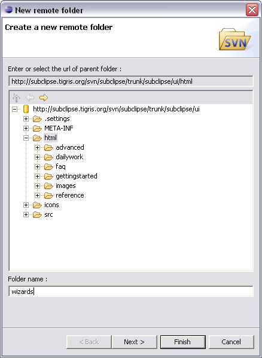

This option will evoke the New remote folder wizard.

Simply select the parent directory for the new remote folder and click Finish. The creation of a remote folder is a commit operation. To specify a commit comment as part of the process, click Next.
Related Tasks
None
Related Reference